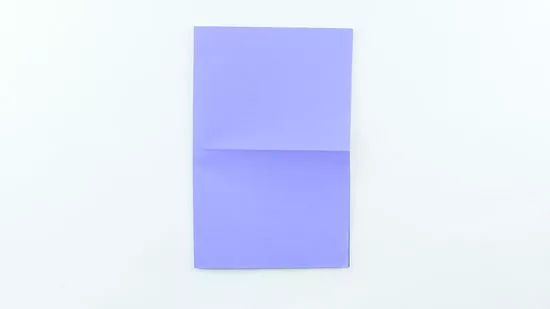
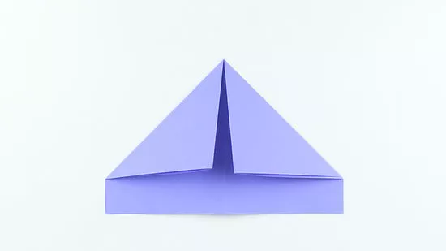
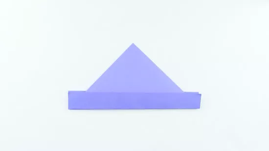
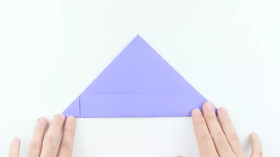
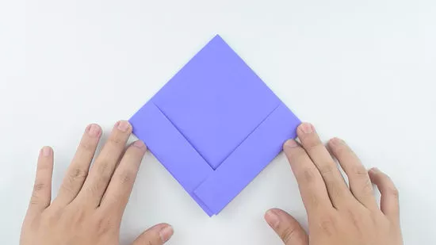
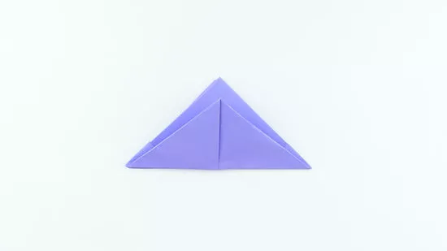
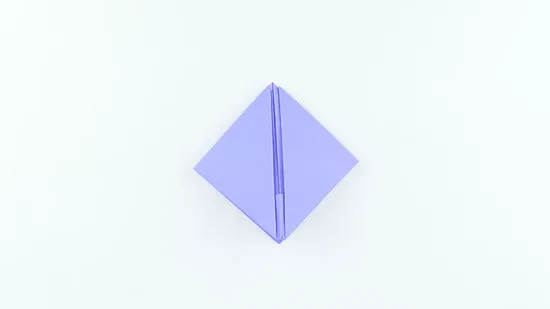
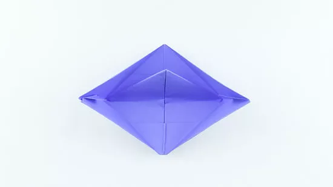
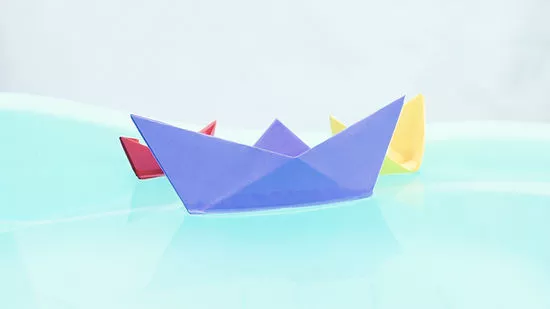

1) Fold a sheet of paper in half. Lay the paper down vertically and fold it from left to right so that its corners meet up
2) Unfold the paper, rotate it 90 degrees, and fold it in half again. At this point, the paper should be lying down horizontally.
3) Flip the paper so that the fold opens toward you. Then, fold down the top corners towards the middle of the paper.
4) Bring the bottom of the paper up to fold it against both sides. Grab the flap at the bottom of the paper and fold it up against the bottom of the 2 folded triangles.
5) Take the bottom corners and fold them in. On 1 side of the paper, grab the corners of the rectangle that are sticking out over the triangle.
6) Make the triangle into a square. Pick up the triangle, rotate it 45 degrees, then use your fingers to open up the bottom of the triangle.
7) Fold up the bottom flaps. Arrange your paper so that the bottom points of the diamond can fold upward.
8) Construct the triangle into a square again. Just like last time, pick up the triangle, rotate it 45 degrees, then open up the bottom of your new triangle with your fingers.
9) Pull out the triangles on the side of the square. Start at the top of the diamond, and gently pull the two sides apart so that the seam running down the middle of the diamond blooms.
10) Float your origami boat. Fill a small tub with water and place the boat on the water. If it starts to droop a little, keep making small adjustments to keep the sides up and prevent the boat from sinking.
Boat
Source: https://www.wikihow.com/Make-a-Paper-Boat









